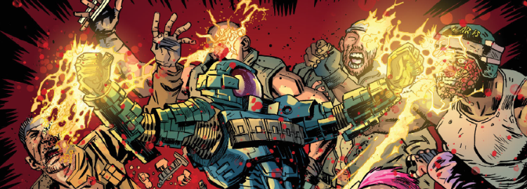

A slightly odd fish that inserts an untold tale of the Traitor General into what we thought we knew of the Nu Earth story, marking him as the protagonist. It's interesting to experiment with the idea that the out and out villain of Rogue Trooper had motives beyond simple self-interest. This also finds time to be a Jaegir flashback / crossover story, while also guest starring Rogue, the biochips and (later) Venus Bluegenes.
Art by PJ Holden & Len O'Grady
| Story Title | Parts | Pages | w indicates a wraparound coverCovers | Year(s) | Issues | Writer | Artist | Colourist | Letterer |
|---|---|---|---|---|---|---|---|---|---|
Linked to: Jaegir Rogue Trooper [The Traitor General] Flashback tale.Hunted | 9 | 45 | 2003: Ben Willsher 1 | 2016 | 2001-2009 | Gordon Rennie | PJ Holden | Len O'Grady | Simon Bowland |
Linked to: Venus Bluegenes Brass & Bland [The Traitor General] Flashback tale.Furies | 10 | 50 | 2035: Richard Elson 1 | 2017 | 2034-2043 | Gordon Rennie | PJ Holden | Len O'Grady | Ellie de Ville |
| year | episodes | pages |
| 2001 | 0 | 0 |
| 2002 | 0 | 0 |
| 2003 | 0 | 0 |
| 2004 | 0 | 0 |
| 2005 | 0 | 0 |
| 2006 | 0 | 0 |
| 2007 | 0 | 0 |
| 2008 | 0 | 0 |
| 2009 | 0 | 0 |
| 2010 | 0 | 0 |
| 2011 | 0 | 0 |
| 2012 | 0 | 0 |
| 2013 | 0 | 0 |
| 2014 | 0 | 0 |
| 2015 | 0 | 0 |
| 2016 | 9 | 45 |
| 2017 | 10 | 50 |
| 2018 | 0 | 0 |
| 2019 | 0 | 0 |
| 2020 | 0 | 0 |
| 2021 | 0 | 0 |